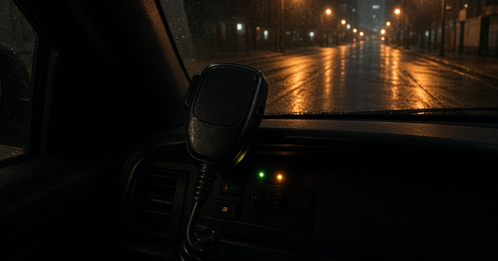
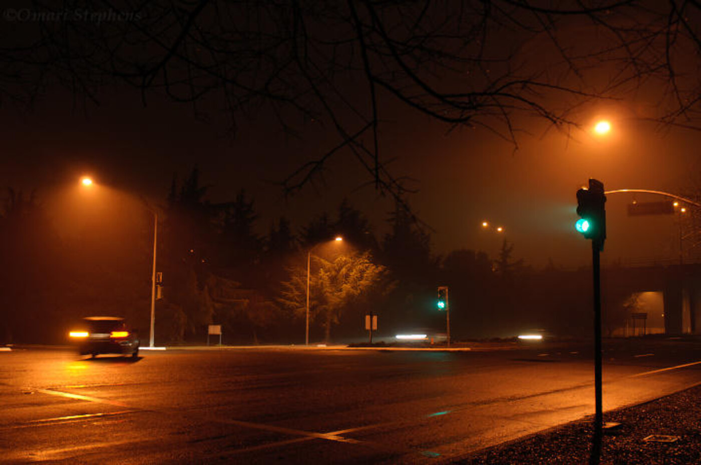

The threshold
It arrived the way a true vision arrives. Not as an argument. Not as a policy. As a scene that was already running when the eyes closed.
Falling asleep in the Tower District. The body still on the mattress. The mind already in a car that smells like vinyl and cold coffee. No name on the chest. No badge number. No address that would let a reader pretend this is a blotter.
A man in a uniform is asking other men in the same uniform a question he already knows the answer to. He is not asking whether the call is real. He is asking whether he will be allowed inside it.
The asking
He does not ask once.
He asks the first officer as if the first officer owns the night. Then he asks another. Then another. The asking is the ritual. Each face is a lock. He is collecting keys.
The call itself stays offstage. That is part of the vision. You do not get the house number. You do not get the weapon. You get only the weather report that everyone in the car already understands. High probability that the night will require force. High enough that a man who wants that weather will show his wanting in public.
Wanting is the part the radio is not built to carry.

The assignment
They tell him yes.
Not a speech. Not a blessing. A work word. He can be assigned to that call.
Assignment is supposed to be a burden. In the training films it is a weight laid on a back that would rather stay in the parking lot. In the vision the word lands like a bottle being opened.
Permission is the drug. The call is only the glass it comes in.
The mode
Then he changes registers.
The professional voice drops. What replaces it is not language so much as pressure leaving a body. He vocalizes the way a drunk vocalizes when the bar has already said last call and joy still has to get out through the throat. A scream that is also a laugh. A laugh that is also a claim. The sound a man makes when he has been holding a private hunger and the room finally licenses it.
He is not describing the work. He is not briefing. He is emoting drunkenness as an explanation. As if the only honest sentence available is volume.
The other officers do not leave. That is the second half of the vision. The sound happens in company. The company is the proof that the hunger was shared, or at least tolerated, or at least not interrupted.
The sound
Not a war cry. Not a hymn. The noise a body makes when the leash is lifted and the body has been waiting for the lift longer than it will ever admit.
What the scream is
A district that lives with radios learns the difference between necessary force and appetite.
Necessary force is ugly and late and full of paperwork. It does not sing. Appetite sings. Appetite asks three people the same question so the answer will feel earned. Appetite treats assignment like a ticket. Appetite needs witnesses.
The vision is not a verdict on every officer on Olive. Most of the night is quiet work. Most of the night is a man sitting in a car hoping the radio stays dull. The vision is about the other frequency. The one that lights up when the dull night finally offers a door with violence standing behind it, and someone smiles with his whole throat.
You can hear that smile from a porch. You can hear it even when the scanner is off. The neighborhood keeps a second radio in the body. It knows when a voice has left the job and entered the want.
After the eyes open
There is no dispatch log to attach. No timestamp. No unit number. That is honest. A vision is not a citation.
What remains after the room comes back is a simple test the District already uses on every other kind of power. Who asked to be near the harm. Who needed permission said out loud. Who made a party sound when the permission arrived.
The call may have been real in some other night, in some other city, in some other life. The vision does not care. The vision only kept the sequence.
Ask. Ask again. Receive the assignment. Then scream like a drunk who just found out the night is still open.
Note
This is a falling-asleep vision recorded in the High Tower District on 9 September 2026. It is not a police report and it is not a named incident. The sequence is the artifact. The asking. The yes. The sound that followed the yes.
THE HIGH TOWER DISTRICT keeps a public record of streets, porches, and civic weather. A vision belongs in that record when the weather it describes is already known to the people who live here.